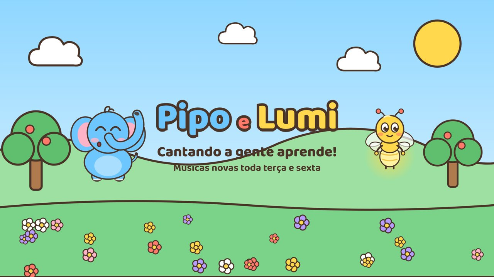
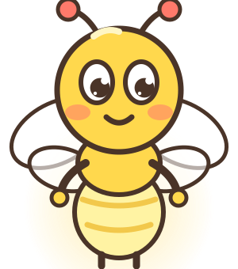

Pipo
o elefantinho curioso
Desastrado e cheio de perguntas: quer saber o porquê de tudo! Quando o refrão chega, a tromba dele vira um trompete.
curiosobrincalhãotrompetista
Dois amigos que transformam cada descoberta em música. Cantando a gente aprende!
o elefantinho curioso
Desastrado e cheio de perguntas: quer saber o porquê de tudo! Quando o refrão chega, a tromba dele vira um trompete.
curiosobrincalhãotrompetista
a vagalume que ilumina
Esperta e carinhosa, ajuda o Pipo a encontrar as respostas. A luz da barriga dela pisca no ritmo da música.
espertacarinhosabrilhanteMúsicas de 2 a 3 minutos para crianças de 2 a 5 anos, cada uma com um tema do dia a dia.
Como os vídeos do Pipo e Lumi são feitos — e o que você pode esperar deles.
Cada canção trabalha uma ideia simples (uma cor, um número, um hábito, um sentimento), com frases curtas, refrão que se repete e mensagens positivas.
Todos os vídeos são marcados no YouTube como feitos para crianças: sem comentários, sem anúncios personalizados. Para os pequenos, recomendamos o app YouTube Kids.
Letras, músicas, vozes e animações são produzidas com ferramentas de inteligência artificial e revisadas por um adulto antes de cada publicação. Os vídeos têm a divulgação de conteúdo sintético do YouTube.
Sem sustos, sem violência, sem marcas ou propagandas dentro dos vídeos, sem luzes piscando rápido. Personagens e canções são originais.
Este site não usa cookies, rastreadores nem formulários, e o canal não pede dados pessoais de crianças. Detalhes na política de privacidade.
Sugestões de temas, dúvidas ou algum problema em um vídeo? Escreva para gustavo.lealtec@gmail.com.
Inscreva-se no canal para não perder as músicas novas de terça e sexta.
Pipo e Lumi no YouTube